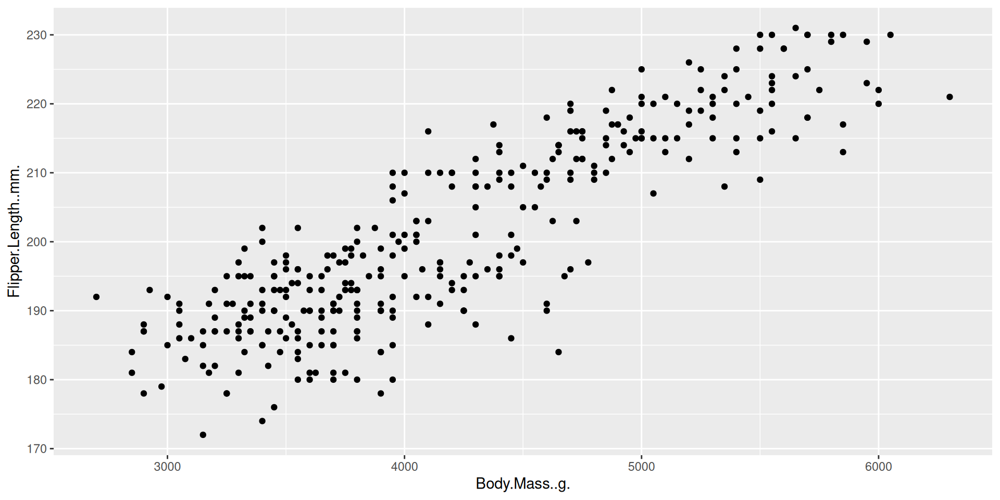

[1] 2https://github.com/MarieEtienne/reproductibilite
2026-09-01
.qmd) → many outputs: HTML report, PDF, slides, websitequarto check tells you (R/Python/Jupyter engines found)git1)quarto render mydoc.qmd or the Render buttonecho, eval, warning, message#| lines at the top of the chunk (native Quarto syntax — not the old inline {r, echo=TRUE} Rmarkdown style)
Figure 1: Caption
$\bar{x}$\[\hat\mu = \frac{1}{n}\sum x_i \qquad(1)\]
Penguins_chapter.qmd: add one generated figure and one equation, each with a label and refers to these same figure and equation in the text.@fig-example, @eq-mean → auto-numbered, clickable.bib file, referenced in YAML: bibliography: references.bib[@alston2021beginner] (already used in introduction.qmd — nice callback)csl: for citation style.bibPenguins_chapter.qmd, render, check the References section appears.qmd files → one navigable siteOCR_TP (your final project) and “reproductibilite” (this courseà) are built.qmd filesproject:
type: website
website:
title: "My site"
navbar:
left:
- text: Home
href: index.qmd
- text: Chapter 1
href: chapter1.qmdindex.qmd → home page.qmd per page/chapter_quarto.yml → glue holding them togetherquarto render (not just one file)Check the yaml header and focus on canonical: true in the editor section.
You can now write a reproducible .qmd combining text, code, figures, equations and citations — and turn a set of .qmd files into a website, ready for the final assignment. as soon as you will masterize the git concepts.